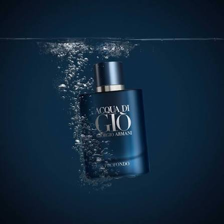
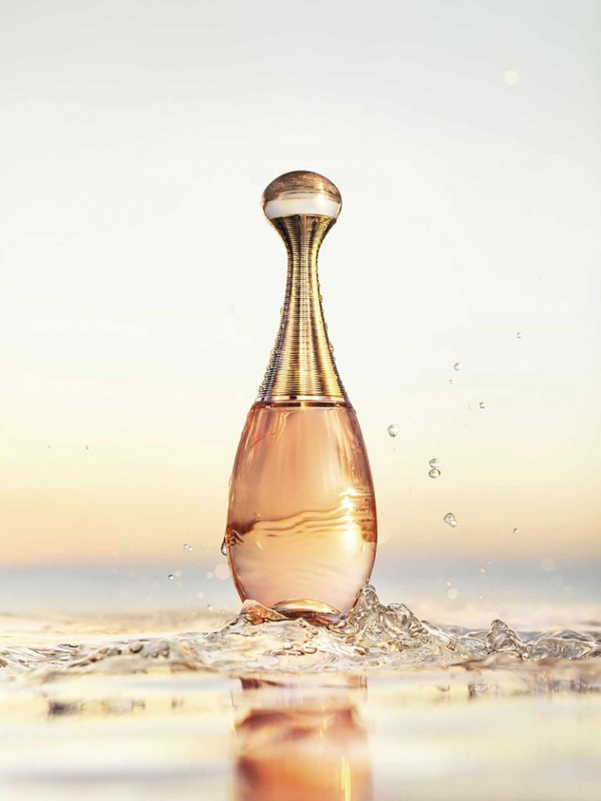
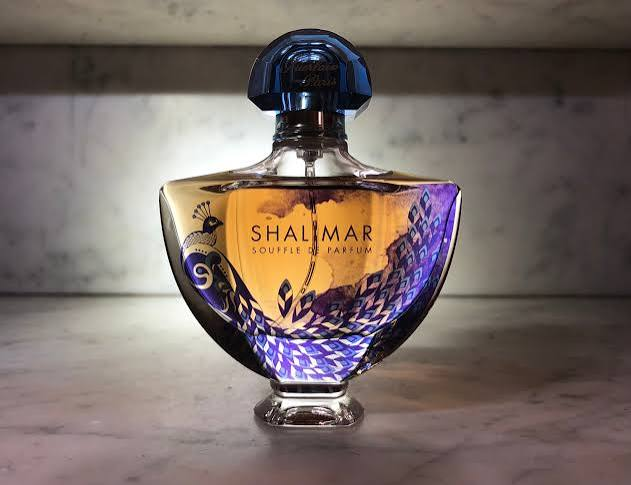
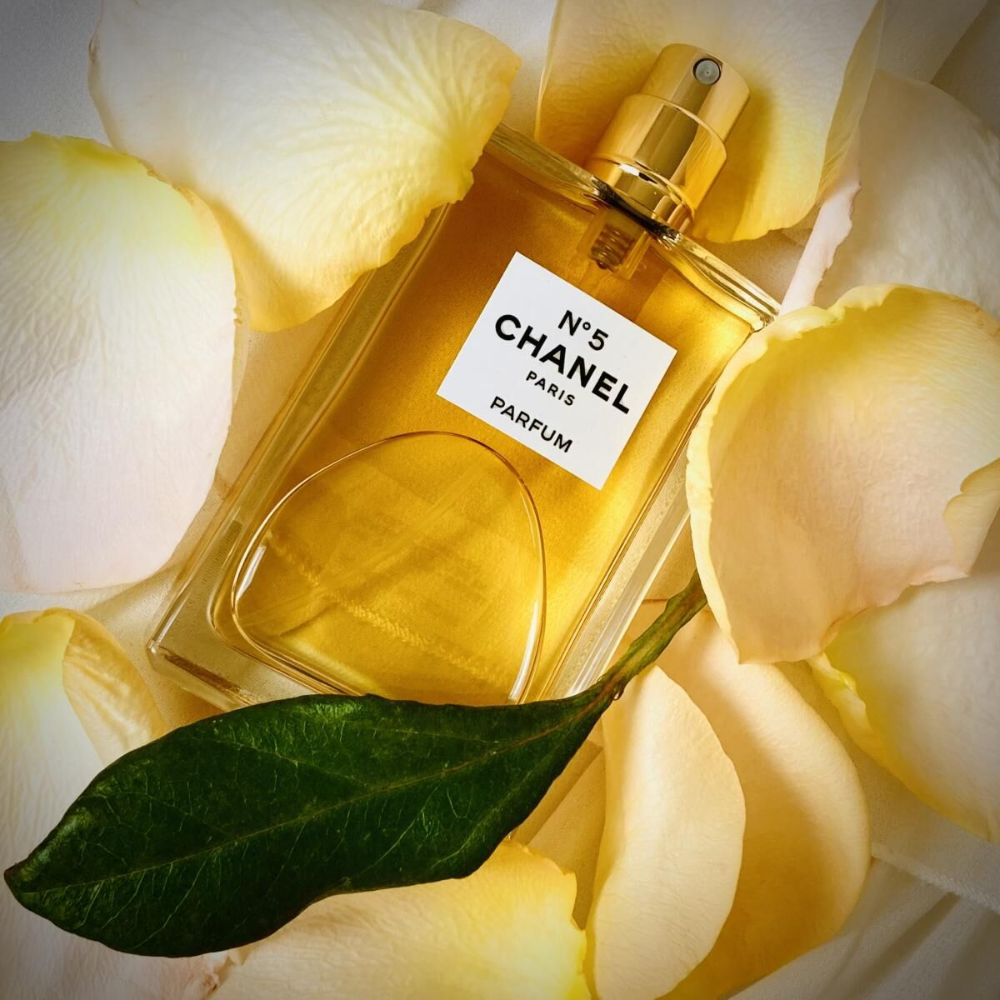

Acqua di Giò(Giorgio Armani)
Acqua di Giò è uno dei profumi maschili più iconici e venduti al mondo, lanciato nel 1996 e creato dal celebre maestro profumiere Alberto Morillas.
100ml - 120€
Acquista ora
J'adore(Dior)
J'adore è uno dei profumi femminili più iconici e venduti al mondo, lanciato sul mercato nel 1999. Creato per incarnare l'eleganza, il lusso e la femminilità assoluta della Maison Christian Dior, si distingue come un bouquet floreale e fruttato, ricco, luminoso e solare.
100ml - 150€
Acquista ora
Opium(Yves Saint Laurent)
Opium di Yves Saint Laurent è uno dei profumi più rivoluzionari, trasgressivi e leggendari della storia della profumeria moderna, lanciato nel 1977. Creato per volere dello stilista Yves Saint Laurent, che desiderava una fragranza che evocasse il lusso, il mistero e la sensualità dell'Oriente imperiale, ha ridefinito la categoria dei profumi orientali-speziati.
100ml - 140€
Acquista ora
Shalimar(Guerlain)
Shalimar di Guerlain è universalmente riconosciuto come il capostipite dei profumi orientali nella storia della profumeria moderna. Creato dal celebre naso Jacques Guerlain nel 1921 e presentato ufficialmente a Parigi nel 1925 in occasione dell'Esposizione Internazionale di Arti Decorative.
100ml - 130€
Acquista ora
Chanel N.5(Chanel)
Chanel N.5 è uno dei profumi più iconici e riconoscibili al mondo, lanciato nel 1921 dalla celebre Maison Chanel. Creato dal maestro profumiere Ernest Beaux su richiesta di Gabrielle "Coco" Chanel, il profumo è stato concepito per incarnare l'eleganza, la femminilità e la modernità della donna degli anni '20.
100ml - 160€
Acquista ora